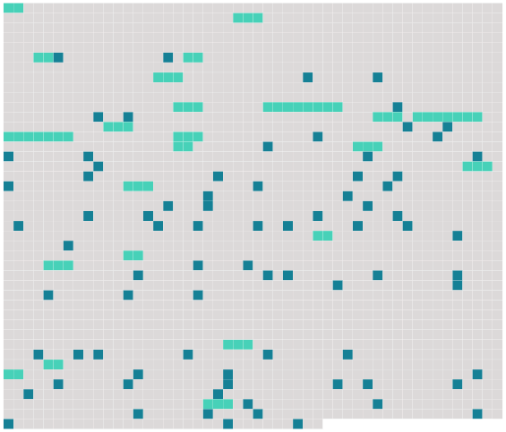

Longueur nb maillons : 103 mentions |
 |
[Le mort] n'était suivi que par huit messieurs dont un pleurait. [4 phrases]
La marche rapide du convoi disait bien pourtant qu'on enterrait [ce défunt -là] sans cérémonie, et, par conséquent, sans religion. [7 phrases] Mais, apercevant un enterrement civil, je me suis empressé de le suivre sans connaître, d'ailleurs, [le mort] [que] vous accompagnez. » Un des messieurs prononça : « [C'] est [une morte] [7 phrases] [Cette jeune femme] s'est tuée, et voilà pourquoi on n'a pas pu [la] faire enterrer religieusement. C'est [son] mari que vous voyez là, le premier, celui qui pleure. [7 phrases]
» [1 phrases] [Elle] eut, étant tout enfant, à l'âge de onze ans, une aventure terrible : un valet [la] souilla. [Elle] en faillit mourir, estropiée par ce misérable que sa brutalité dénonça. Un épouvantable procès eut lieu et révéla que depuis trois mois [la pauvre martyre] était [victime des honteuses pratiques de cette brute] [1 phrases]
« [La petite fille] grandit, marquée d'infamie, isolée, sans camarade, à peine embrassée par les grandes personnes qui auraient cru se tacher les lèvres en touchant [son] front. « [Elle] était devenue pour la ville [une sorte de monstre, de phénomène] On disait tous bas : « Vous savez, [la petite Fontanelle] » Dans la rue tout le monde se retournait quand [elle] passait.
On ne pouvait même pas trouver de bonnes pour [la] conduire à la promenade, les servantes des autres familles se tenant à l'écart comme si une contagion se fût émanée de [l'enfant] pour s'étendre à tous ceux qui [l'] approchaient. « C'était pitié de voir [cette pauvre petite] sur le cours où vont jouer les mioches toutes les après-midi. [Elle] restait toute seule, debout près de [sa] domestique, regardant d'un air triste les autres gamins qui s'amusaient. Quelquefois, cédant à une irrésistible envie de se mêler aux enfants, [elle] s'avançait timidement, avec des gestes craintifs, et [entrait] dans un groupe d'un pas furtif, comme consciente de [son] indignité. [1 phrases] [La petite Fontanelle] demeurait isolée, éperdue, sans comprendre ; et [elle] se mettait à pleurer, le coeur crevant de chagrin.
Puis [elle] courait se cacher la figure, en sanglotant, dans le tablier de [sa] bonne. « [Elle] grandit ; ce fut pis encore. On éloignait d' [elle] les jeunes filles comme d'une pestiférée.
Songez donc que [cette jeune personne] n'avait plus rien à apprendre, rien ; qu' [elle] n'avait plus droit à la symbolique fleur d'oranger ; qu' [elle] avait pénétré, presque avant de savoir lire, le redoutable mystère que les mères laissent à peine deviner, en tremblant, le soir seulement du mariage.
« Quand [elle] passait dans la rue, accompagnée de sa gouvernante, comme si on [l'] eût gardée à vue dans la crainte incessante de quelque nouvelle et terrible aventure, quand elle passait dans la rue, les yeux toujours baissés sous la honte mystérieuse qu' [elle] sentait peser sur [elle] , les autres jeunes filles, moins naïves qu'on ne pense, chuchotaient en [la] regardant sournoisement, ricanaient en dessous, et détournaient bien vite la tête d'un air distrait, si par hasard [elle] les fixait. « On [la] saluait à peine. [1 phrases] Les mères feignaient de ne [l'] avoir pas aperçue.
Quelques petits voyous [l'] appelaient « madame Baptiste », du nom du valet qui [l'] avait outragée et perdue. « Personne ne connaissait les tortures secrètes de [son] âme ; car [elle] ne parlait guère et ne [riait] jamais.
[Ses] parents eux -mêmes semblaient gênés devant [elle] , comme s'ils [lui] en eussent éternellement voulu de quelque faute irréparable. [1 phrases]
M. et Mme Fontanelle considéraient [leur fille] comme ils eussent fait d'un fils sortant du bagne. « [Elle] était jolie et pâle, grande, mince distinguée.
[Elle] m'aurait beaucoup plu, monsieur, sans cette affaire. [1 phrases] « Il vit [Mlle Fontanelle] et en devint amoureux. [3 phrases] Avec [cette femme -là] , je dormirai tranquille.
» [2 phrases]
Enfin, on commençait à oublier et [elle] prenait place dans le monde. « Il faut vous dire qu' [elle] adorait [son] mari comme un dieu. Songez qu'il [lui] avait rendu l'honneur, qu'il [l'] avait fait rentrer dans la loi commune, qu'il avait bravé, forcé l'opinion, affronté les outrages, accompli, en somme, un acte de courage que bien peu d'hommes accompliraient.
[Elle] avait donc pour lui une passion exaltée et ombrageuse. « [Elle] devint enceinte, et, quand on apprit [sa] grossesse, les personnes les plus chatouilleuses [lui] ouvrirent leur porte, comme si [elle] eût été définitivement purifiée par la maternité. [11 phrases]
Le peuple n'est pas charitable ni délicat, et tous les yeux se sont tournés vers [cette pauvre dame] [3 phrases]
[Elle] se leva et [retomba] sur [son] siège trois fois de suite, comme si [elle] eût voulu se sauver et compris qu' [elle] ne pourrait traverser toute cette foule qui [l'] entourait. « Une voix, quelque part, dans le public, cria encore : « Ohé, [madame Baptiste] !! [2 phrases] On se répétait le mot ; on se haussait pour voir la figure que faisait [cette malheureuse] ; des maris enlevaient leurs femmes dans leurs bras afin de [la] leur montrer ; des gens demandaient : « [Laquelle] , celle en bleu?? [1 phrases] « [Elle] ne remuait plus, éperdue, sur [son] fauteuil d'apparat, comme si [elle] eût été placée en montre pour l'assemblée. [Elle] ne pouvait ni disparaître, ni bouger, ni dissimuler [son] visage.
[Ses] paupières clignotaient précipitamment comme si une grande lumière [lui] eût brûlé les yeux ; et [elle] soufflait à la façon d'un cheval qui monte une côte.
« Ça fendait le coeur de [la] voir. [2 phrases]
« Une heure après, au moment où les Hamot rentraient chez eux, [la jeune femme] , [qui] n'avait pas prononcé un seul mot depuis l'insulte, mais [qui] tremblait comme si tous ses nerfs eussent été mis en danse par un ressort, enjamba tout à coup le parapet du pont sans que [son] mari ait eu le temps de [la] retenir, et se [jeta] dans la rivière. [1 phrases] On fut deux heures avant de parvenir à [la] repêcher. [Elle] était morte, naturellement. [1 phrases] Puis il ajouta : « C'est peut-être ce qu' [elle] avait de mieux à faire dans [sa] position. |
 |
La ressource peut être téléchargée sur la page Ortolang
Si vous avez des questions ou vous voyez des erreurs, merci d'envoyer un mail à silvia.federzoni89@gmail.com
Site développé par S. Federzoni (contact)